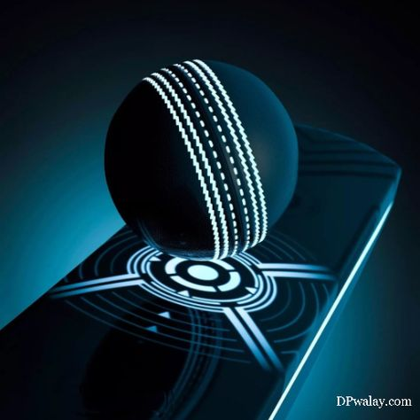
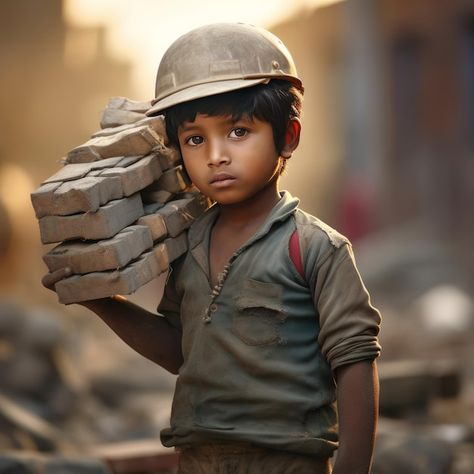

Home
Article Writing: What is it?
An article is a piece of writing that serves to clarify, present ideas, or discuss a subject systematically. You’ll find stories in newspapers, magazines, blogs, websites, and other publications.
Publications intending to persuade or enlighten the public play an important role in today’s society, and articles are no exception. An article’s structure and style may change depending on the topic or author. However, the ideal article would engage readers, challenge their thinking, and motivate them while providing useful information.
Article Writing: Objectives
The following goals should guide the writing of any given article:
The objective is to highlight the central idea or theme.
The report has to cover all the bases.
Recommendations or suggestions to the readers are required.
To be considered, the piece must have the potential to move and provoke its audience.
The essay should include a variety of subjects, such as historical figures, geographical locations, new threats, and technological developments.
Articles
Music
The power of music: how it can benefit health “I think music in itself is healing,” American musician Billy Joel once said. “It’s an explosive expression of humanity. It’s something we are all touched by. No matter what culture we’re from, everyone loves music.” Most of us would wholeheartedly agree with this statement, and it is this universal bond with music that has led researchers across the globe to investigate its therapeutic potential. “We have a such a deep connection to music because it is ‘hardwired’ in our brains and bodies,” said Barbara Else. We can all think of at least one song that, when we hear it, triggers an emotional response. It might be a song that accompanied the first dance at your wedding, for example, or a song that reminds you of a difficult break-up or the loss of a loved one.
Nature
Nature is an inherent character or constitution, particularly of the ecosphere or the universe as a whole. In this general sense nature refers to the laws, elements and phenomena of the physical world, including life. Although humans are part of nature, human activity or humans as a whole are often described as at times at odds, or outright separate and even superior to nature. During the advent of modern scientific method in the last several centuries, nature became the passive reality, organized and moved by divine laws. With the Industrial Revolution, nature increasingly became seen as the part of reality deprived from intentional intervention: it was hence considered as sacred by some traditions (Rousseau, American transcendentalism) or a mere decorum for divine providence or human history (Hegel, Marx). However, a vitalist vision of nature, closer to the pre-Socratic one, got reborn at the same time, especially after Charles Darwin.
Cricket
Cricket is a bat-and-ball game that is played between two teams of eleven players on a field, at the centre of which is a 22-yard (20-metre) pitch with a wicket at each end, each comprising two bails balanced on three stumps. Two players from the batting team (the striker and nonstriker) stand in front of either wicket holding bats, with one player from the fielding team (the bowler) bowling the ball towards the striker's wicket from the opposite end of the pitch. The striker's goal is to hit the bowled ball with the bat and then switch places with the nonstriker, with the batting team scoring one run for each exchange. Runs are also scored when the ball reaches or crosses the boundary of the field or when the ball is bowled illegally. The fielding team tries to prevent runs from being scored by dismissing batters (so they are "out"). Means of dismissal include being bowled, when the ball hits the striker's wicket and dislodges the bails, and by the fielding side either catching the ball after it is hit by the bat but before it hits the ground or hitting a wicket with the ball before a batter can cross the crease in front of the wicket. When ten batters have been dismissed, the innings ends and the teams swap roles. Forms of cricket range from Twenty20 (also known as T20), with each team batting for a single innings of 20 overs (each "over" being a set of 6 fair opportunities for the batting team to score) and the game generally lasting three to four hours, to Test matches played over five days.
Child Labour
Not all children in India are lucky to enjoy their childhood. Many of them are forced to work under inhuman conditions where their miseries know no end. Though there are laws banning child labour, still children continue to be exploited as cheap labour. It is because the authorities are unable to implement the laws meant to protect children from being engaged as labourers. Unfortunately, the actual number of child labourers in India goes un-detected. Children are forced to work is completely unregulated condition without adequate food, proper wages, and rest. They are subjected to physical, sexual and emotional abuse. Causes of Child Labour: Factors such as poverty, lack of social security, the increasing gap between the rich and the poor have adversely affected children more than any other group. We have failed to provide universal education, which results in children dropping out of school and entering the labour force. Loss of jobs of parents in a slowdown, farmers’ suicide, armed conflicts and high costs of healthcare are other factors contributing to child labour. A widespread problem: Due to high poverty and poor schooling opportunities, child labour is quite prevalent in India. Child labour is found in rural as well as urban areas. The 2001 census found an increase in the number of child labourers from 11.28 million in 1991 to 12.59 million. Children comprise 40% of the labour in the precious stone cutting sector. They are also employed in other industries such as mining, zari and embroidery, dhabas, tea stalls and restaurants and in homes as domestic labour.
Artificial Intelligence

Artificial intelligence (AI) refers to computer systems capable of performing complex tasks that historically only a human could do, such as reasoning, making decisions, or solving problems. Today, the term “AI” describes a wide range of technologies that power many of the services and goods we use every day – from apps that recommend tv shows to chatbots that provide customer support in real time. But do all of these really constitute artificial intelligence as most of us envision it? And if not, then why do we use the term so often? In this article, you’ll learn more about artificial intelligence, what it actually does, and different types of it. In the end, you’ll also learn about some of its benefits and dangers and explore flexible courses that can help you expand your knowledge of AI even further.
Services
The problem with article writing and content creation is often about inspiration and underlying that is probably an understanding of why this is really important for your business. Once you get beyond that the next problems are what to write about, where to start and how to start. Typically, if the above problems are familiar to you, you may find yourself waiting for inspiration or even struggling with structure. You might also find it hard to get going with opening lines or paragraphs. Alternatively you might sit there and force the article out. If you find yourself procrastinating and never quite getting around to writing articles or that they take a long time, this article will help. Over the last decade I’ve written over 500 articles. Most are written in under 45 minutes. I have a way of catching inspiration on the topics. I also have a ritual for writing them and a structure for putting them together. This makes the whole process quick and easy.